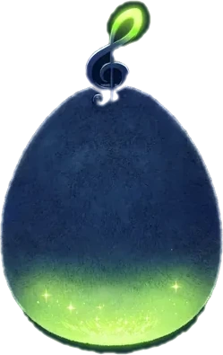

SONORA INTELLIGENCE
Don't be the same. Come together.
MIC OFF
PITCHREF A = 442 Hz ·
—
CENT
DON'T BE THE SAME.COME TOGETHER.
SPL CALIBRATION
dBFS—
OFFSET+94
EST. SPL— dB
A rough guide. Adjust it against a sound level meter.
120BPM▶
CONDUCT
PITCH TRACE
ATTACK —·SETTLE —
EASY CHORD FINDER
INTUNE — PITCH◎ STRICT ±3¢
—
FIXED ±25¢STREAK0.0 s
SONORA INTELLIGENCE
WAVEFORMWAITING
ANALYZE
BAND ANALYSIS
Choose an input source (Synth / Mic / File) in the Trace tab. S = solo, M = mute
NOXUN

DIRECTOR KEYBOARD
C ±0
DRONE
Hold a reference tone to check pitch and chord blend. Temperament (equal / just) is set in the Settings tab
SESSION LOG
AVG—
HIGHEST—
LOWEST—
RANGE—
STABILITY—
SOUNDING TIME—
METRONOME
BEATS
4
TEMPO
120BPM
MODERATO
PRESS CENTER TO START
MODE
DIV
Tap a cell to change its beats (2→3→4→5→6→7→8→9→12). Editable while playing
FULL CONDUCT
—BPM
STABILITY —BEATS 0
BREATH LABRESEARCH EDITION
1PLACEPhone on your belly
2CALIBRATESet the resting posture
3BREATHEWatch the wave
MEASUREMENT MODESENSOR
CAMERA SETUP
CAMERA
CAMERA MEASUREMENT—
CHEST
ABDOMEN
—
READY
ESTIMATED FROM THE ABDOMEN WAVE
CHEST · MOVEMENT—
ABDOMEN · MOVEMENT—
BRIGHTNESS—
MEASUREMENT TIME
63SECONDS LEFT
RESULT—
MEASUREMENT QUALITY TOO LOW
BREATHS—COUNT
BREATH CYCLE · EST.—SEC
CYCLE VARIATION—CV
INHALE · AVG EST.—SEC
EXHALE · AVG EST.—SEC
WAVE REGULARITY—RELATIVE
CHEST MOVEMENT—RELATIVE
ABDOMEN MOVEMENT—RELATIVE
CHEST / ABDOMEN—RELATIVE
PEAK TIMING LAG：—
COMPARED WITH YOUR PREVIOUS CAMERA SESSION
LIVE MOTIONSENSOR OFF
READY
BREATHE NATURALLY
65SECONDS LEFT
YOUR BELLY · LIVE MOVEMENT
AMPLITUDE—RELATIVE / a.u.
EST. CYCLE—SEC / CYCLE
SAMPLES0POINTS
RECENT BREATHS · SIZE OF MOVEMENT
Breaths appear here as they are detected.
A SMALL TIP
MEASUREMENT TIME
SENSOR INPUT
If the wave moves opposite to your belly, tap INVERT DIRECTION.
BREATH FOG
As you breathe out, the wave window fogs up softly — like breath on a mirror. It clears as you breathe in.
RESULT
BELLY MOVEMENT RANK
—
SIZE OF MOVEMENT
–
STEADINESS
–
BREATHS CAPTURED
–
BREATHS—COUNT
AVG PER BREATH—SEC
BELLY MOVEMENT · AVG—RELATIVE / a.u.
VARIATION (SPREAD)—RELATIVE / a.u.
EACH BREATH · SIZE OF MOVEMENT
GUIDED BREATHING · PACER
READY
—
PATTERN
SESSION DATA
SAMPLE RATE 48000 Hz · FFT 4096
SONORA INTELLIGENCE
MIC SENSITIVITY
Raises the response to quiet sounds. At MAX, room noise is picked up more easily
FINE MODE
Fine mode narrows the meter to ±15 cents and the in-tune window to ±3 cents
OUTPUT VOLUME
100%
Loudness of the metronome, reference tones and all other sounds
ACCENT COLOR
BASE COLOR